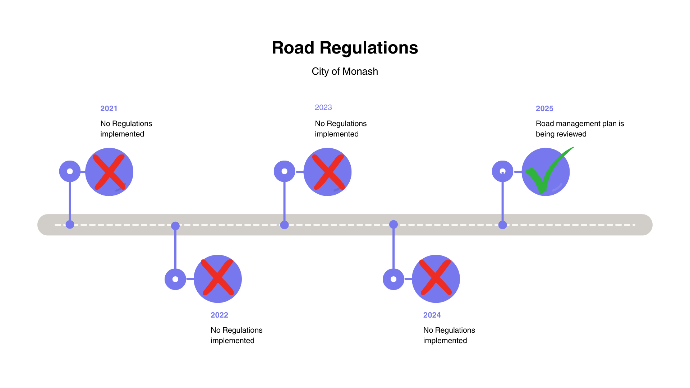

The City of Monash aims to improve their road safety through their Road Management plan, a plan that spans from 2021 and 2030, an overview of how the City of Monash aims to improve their road safety through road regulations. In addition the Annual Report, is an overview of the City of Monash’s accomplishments each year, for the sake of relevance, this review will be specifically inspecting the road management section of this Annual report from 2021 - 2025.

Clearly it can be seen that apart from minor infrastructure like cycling lanes and footpaths. The City of Monash has done close to nothing to improve their road safety and have gone against almost all of their goals set out by the Road Management Plan. With the exception of ensuring continuous review by having a scheduled review during 2025 of their management plan. Overall, the City of Monash while being able to focus on minor road safety issues has not demonstrated the ability nor desire to significantly improve their cities road safety.